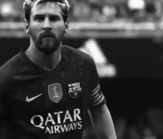
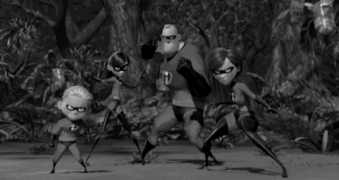

the DANIA's DAILY NEWS paper
UKRAINE, KIEV || SATURDAY, January 13 2017 || Ltd. "DANIA's DAILY NEWS"
SPORT:
What does mean 'Barçaspan' for fans of football? How much it costs these days?
SCIENCE:
Self-driving car technology: What are benefits from the 'autonomous car'?
BUSINESS:
What is the correct name of Bill Gates? NEW the richest person of the word!
ENTERTAINMENT:
New incredible movie from 'Disney' and 'Pixar' that you'll be able to see in 2018!
SCIENCE: robotic car
robotic car An autonomous car (also known as a driverless car, self-driving car, robotic car, autos) and unmanned ground vehicle is a vehicle that is capable of sensing its environment and navigating without human input.

Autonomous cars use a variety of techniques to detect their surroundings, such as radar, laser light, GPS, odometry and computer vision. Advanced control systems interpret sensory information to identify appropriate navigation paths, as well as obstacles
and relevant signage. Autonomous cars must have control systems that are capable of analyzing sensory data to distinguish between different cars on the road. The potential benefits of autonomous cars include reduced mobility and infrastructure costs,
increased safety, increased mobility, increased customer satisfaction and reduced crime. Specifically a significant reduction in traffic collisions; the resulting injuries; and related costs, including less need for insurance. Autonomous cars are
predicted to increase traffic flow; provide enhanced mobility for children, the elderly, disabled and the poor; relieve travelers from driving and navigation chores; lower fuel consumption; significantly reduce needs for parking space; reduce crime;
and facilitate business models for transportation as a service, especially via the sharing economy. This shows the vast disruptive potential of the emerging technology. A frequently cited paper by Michael Osborne and Carl Benedikt Frey found that
autonomous cars would make many jobs redundant.
Link to resourse
SPORT: 'FC Barcelona' is symbol of Catalan culture

'Fútbol Club Barcelona' commonly known as Barcelona and familiarly as Barça, is a professional football club based in Barcelona
Catalonia, Spain.
Founded in 1899 by a group of Swiss, English and Catalan footballers led by Joan Gamper, the club has become a symbol of Catalan
culture and Catalanism, hence the motto "Més que un club" ("More than a club"). Unlike many other football clubs, the supporters own and
operate Barcelona. It is the second most valuable sports team in the world, worth $3.56 billion, and the world's second richest football club in
terms of revenue, with an annual turnover of €560.8 million. The official Barcelona anthem is the "Cant del Barça", written by Jaume Picas
and Josep Maria Espinàs.
Domestically, Barcelona has won 24 La Liga, 29 Copa del Rey, 12 Supercopa de España, 3 Copa Eva Duarte and 2 Copa de la Liga
trophies, as well as being the record holder for the latter four competitions. In international club football, Barcelona has won twenty
European and World titles: four UEFA Champions League titles and one European Cup, a record four UEFA Cup Winners' Cup, a joint
record five UEFA Super Cup, a record three Inter-Cities Fairs Cup and a joint record three FIFA Club World Cup. Barcelona was ranked
first in the International Federation of Football History & Statistics Club World Ranking for 1997, 2009, 2011, 2012 and 2015 and currently
occupies the third position on the UEFA club rankings. The club has a long-standing rivalry with Real Madrid; matches between the two
teams are referred to as El Clásico.
Barcelona is one of three founding members of the Primera División that have never been relegated from the top division, along with
Athletic Bilbao and Real Madrid. In 2009, Barcelona became the first Spanish club to win the continental treble consisting of La Liga, Copa
del Rey, and the UEFA Champions League, and also became the first Spanish football club to win six out of six competitions in a single year,
by also winning the Spanish Super Cup, UEFA Super Cup and FIFA Club World Cup. In 2011, the club became European champions again
and won five trophies. This Barcelona team, which won 14 trophies in just 4 years under Pep Guardiola, is considered by some in the sport to
be the greatest team of all time. By winning their fifth Champions League trophy on 6 June 2015, Barcelona became the first European club
in history to achieve the continental treble twice.
Link to resourse
IT BUSINESS: Bill Gates
William Henry Gates III (born October 28, 1955) is an American business magnate, investor, author, philanthropist, humanitarian and co-founder of the Microsoft Corporation along with Paul Allen. In 1975, Gates and Allen launched Microsoft, which became
the world's largest PC software company. During his career at Microsoft, Gates held the positions of chairman, CEO and chief software architect, while also being the largest individual shareholder until May 2014. Gates stepped down as chief
executive officer of Microsoft in January 2000, but he remained as chairman and created the position of chief software architect for himself. In June 2006, Gates announced that he would be transitioning from full-time work at Microsoft to part-time
work and full- time work at the Bill & Melinda Gates Foundation. He gradually transferred his duties to Ray Ozzie and Craig Mundie. He stepped down as chairman of Microsoft in February 2014 and assumed a new post as technology adviser to support
the newly appointed CEO Satya Nadella. Gates is one of the best-known entrepreneurs of the personal computer revolution. He has been criticized for his business tactics, which have been considered anti-competitive. This opinion has been upheld by
numerous court rulings. Later in his career, Gates pursued a number of philanthropic endeavors. He donated large amounts of money to various charitable organizations and scientific research programs through the Bill & Melinda Gates Foundation,
which was established in 2000. Since 1987, Gates has been included in the Forbes list of the world's wealthiest people, an index of the wealthiest documented individuals, excluding and ranking against those with wealth that is not able to be
completely ascertained. From 1995 to 2017, he held the Forbes title of the richest person in the world all but four of those years, and held it consistently from March 2014–July 2017, with an estimated net worth of US$89.9 billion as of October
2017. However, on July 27, 2017, and since October 27, 2017, he has been surpassed by Amazon.com founder Jeff Bezos, who had an estimated net worth of US$90.6 billion at the time. In 2009, Gates and Warren Buffett founded The Giving Pledge, whereby
they and other billionaires pledge to give at least half of their wealth to philanthropy. The foundation works to save lives and improve global health, and is working with Rotary International to eliminate polio.
Link to resourse
MOVIE: Incredibles 2
Incredibles 2 is an upcoming American 3D computer-animated superhero film, and is the direct sequel to the 2004 film The Incredibles. It is in production by Pixar Animation Studios, and will be released by Walt Disney Pictures. It is being written
and directed by Brad Bird, the writer and director of the first film, and features Holly Hunter, Craig T. Nelson, Sarah Vowell and Samuel L. Jackson all reprising their roles. The film is scheduled to be released on June 15, 2018, and will be given
an IMAX release.
Plot
Taking place immediately after the first film, the end of which introduces The Underminer (John Ratzenberger), the Parr family struggles to maintain normal lives while Helen Parr (Holly Hunter), also known as Elastigirl, is out fighting crime. Meanwhile,
Helen's husband Bob Parr (Craig T. Nelson), also known as Mr. Incredible, remains at home watching their children Violet (Sarah Vowell), Dash (Huck Milner), and discovering Jack-Jack's secret powers. However, they, along with Frozone (Samuel
L. Jackson) will have to battle a new villain with a sinister plot.

Link to resourse